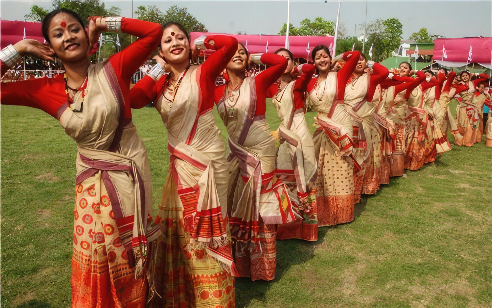

Culture of Guwahati
The city of Guwahati is one of the largest cities of the Northeast and the place is known for its rich cultural heritage and tradition.
The city is the main centre of cultural activities in Assam and the tourists coming to Guwahati would be surely mesmerized by the rich cultural heritage that the city possesses.
The colorful culture of the beautiful city of Guwahati can be seen in its art and craft forms, music and dance, festivals, food and so on.
Dance and Music of Guwahati

The cultural heritage of Guwahati can be well understood from the dance and music forms of the place which is an integral part of the culture of the people of Guwahati.
The people get actively involved in music and dance to showcase the rich cultural heritage of the city.
Bihu dance is the most important folk dance of the state of Assam and is performed during various cultural festivals of Guwahati.
The Satriya dance is other important classical dance form of Assam introduced by the Vaishnava Saint of Assam Mahapurush Srimanta Sankardeva.
This dance is now internationally acclaimed and is considered as one of the major classical dance forms of India.
Festivals and Fairs of Guwahati
The people of Guwahati are also very enthusiastic about different festivals and fairs that the city hosts annually.
There are people of several communities residing in Guwahati and hence different festivals are celebrated round the year by the different communities in Guwahati with great enthusiasm and joy.
Bihu is one of the most important festivals celebrated in Guwahati.
Bihu is of three types celebrated in different times of the year, it includes Rongali Bihu, Kati Bihu and Magh Bihu.
Some other important festivals of Guwahati include Durga puja, Saraswati Puja, Vishwakarma Puja, Ambubachi Mela, New Year Eve, Brahmaputra Beach Festival, Holi, Diwali, etc.
Art and Culture of Guwahati
Another most important cultural aspect of the Guwahati city is that the people of Guwahati are very fond of various forms of art and culture and it showcases the cultural heritage of the city.
The handloom, painting forms, handicrafts, traditional art forms, weaving forms which portray the richness of tradition and culture of the city.
There are many art and cultural galleries across Guwahati where artists from across the state and region get a chance to display their individual potential in various art forms.
The Shrimanta Sankardeva Kalakshetra is the most significant art and craft gallery in Guwahati.
The Artists’ Guild is one of the leading galleries in Guwahati that showcases various paintings of different artist of Assam.